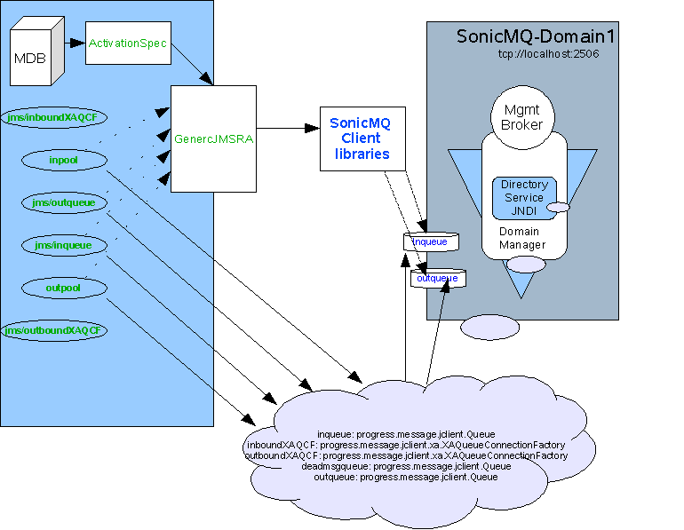

Integrating
Sun Java System Application Server with Sonic MQ 7.0 using
Generic Resource Adapter for JMS
By Ramesh Parthasarathy, July
2006
More often than not, EAI developers are faced with a situation
where they have to integrate disparate messaging products with
transactional
applications deployed in a Java EE application server. The preferred
message provider pluggability mechanism in J2EE 1.4 and beyond is,
using
the Connectors
1.5 architecture, but a lot of messaging providers do
not bundle Connectors 1.5 compliant resource adapters to help in this
integration. The situation is worse when the provider does not provider
an adapter ( even if its not Connection 1.5 based) for the
application server being used.
The Generic
resource adapter for JMS
project helps in integrating messaging products with
J2EE application servers by wrapping their JMS client library in a J2EE
Connector Architecture 1.5 resource adapter. It has been used to
integrate different messaging products like Tibco EMS, IBM WebSphere MQ
and Sun Java
System Message Queue with the Sun Java System Application
Server.
In this article we would
guide you through the steps for using the Generic Resource Adapter for
JMS [referred to as 'Generic RA' in the article going forward] to
integrate Sonic MQ 7.0 with Sun
Java
System Application Server 8.2 (SJSAS)
Instructions outlined in this article could also be used to integrate
Sonic MQ 7.0 with Project
GlassFish and the Java
EE 5 SDK preview/Sun Java System Application Server PE 9 versions
available today.
Contents
Article
Conventions/Assumptions
Through out this article, we have used the asadmin command line
interface to show all the interactions performed with the application
server. You could also use the asadmin GUI console to achieve
the
same. Similarly this article assumes a *nix based system [Solaris,
Linux]. If you are using Windows, Replace
the instructions with Windows equivalents as
necessary.
Similarly the steps outlined below assume a successful
installation of Sonic MQ 7.0 ("Typical" installation is assumed, if you
have done a "custom" installation you might require additional
configurations).
This article also assumes that the Sonic MQ broker and the
application server are deployed and running on the same physical
host/machine. If you have the MQ broker running on a different machine
and need to access it remotely, please refer the Sonic MQ
documentation for configuration details. The RA configuration and other
application server related configuration remains unchanged.
While looking at the configuration of the resource-adapter, connector
connection pool etc. in this article, only a handful of properties,
relevant for this discussion is covered. Please note that all the
resource adapter, connection factory and activationspec configuration,
listed in the Generic RA user
guide could be used while configuring these objects.
Initial
Setup
The following permissions need to be added to the server.policy and the
client.policy file to deploy the generic resource adapter and to run
the client application.
- Edit the server.policy file in the
[${appserver-install-dir}/domains/domain1/config/] directory using your
favourite text editor and add the following line to the default grant
block.
permission java.util.logging.LoggingPermission "control";
permission
java.util.PropertyPermission "*",
"read,write";
- Should you use an application client in your application,
edit
the application client's client.policy file in the
[${appserver-install-dir}/lib/appclient/client.policy] directory and
add the following line to it.
permission javax.security.auth.PrivateCredentialPermission
"javax.resource.spi.security.PasswordCredential * \"*\"","read";
- Modify the domain's classpath to add Sonic MQ 7.0 jars
located in Sonic MQ installation lib directory. The asadmin GUI could
be used to
modify a domain's classpath. Open a browser and type the url of the
application server admin GUI - http://hostname:adminport. Go to
Application Server -> JVM Settings -> Path Settings . Add
an
entry for the jar files shown below [comma-separated as shown below] in
the classpath suffix. Restart the application server domain for these
changes to take
effect.
/opt/Sonic/MQ7.0/lib/sonic_Client.jar
/opt/Sonic/MQ7.0/lib/mfcontext.jar
Set the LD_LIBRARY_PATH environment variable to /opt/Sonic/MQ7.0/lib
and restart the application server. For example in *NIX
system,
based on the choice of your shell. you would type in
$ export
LD_LIBRARY_PATH=/opt/Sonic/MQ7.0/lib
Configuring SonicMQ
administered objects

If a "Typical" installation was performed with default values it would
create a Domain Manager with following values :
Domain "Domain1"
Management Conatainer "DomainManager"
Management Broker "MgmtBroker"
Management Broker Port "2506"
Messaging Container <hostname of the machine>
Messaging Broker Name <hostname of the machine>
Messaging Broker Port "2507"
If your settings are different from the above then additional
configuration might be required to get the setup working. Please refer
the Sonic MQ
documentation for installation details. The following instructions are
based on the default values.
- Note: All artifacts created on the Sonic MQ side and
the application server side are shown in blue and green respectively in
the image above.
"/opt/Sonic" has been considered as the install location of Sonic MQ.
- Start the Sonic MQ container for the domain "Domain1"
$
/opt/Sonic/MQ7.0/bin/startcontainer.sh
- Create the required destinations :
3 queue destinations
have to be created , "inqueue", "outqueue" and the "deadmsgqueue"
The physical destinations can be
created in one of the 3 ways
- Through the sonic mq administration console
- Using the javascript samples
(/opt/Sonic/samples/Management/configApi/jsConfigBean).
- Exceuting the Java-based samples
(/opt/Sonic/samples/Management/configApi/javaConfigBean).
For e.g the following
steps have to be perfromed to create a queue "inqueue" in the default
- Go to the folder
/opt/Sonic/samples/Management/configApi/jsConfigBean and edit the
CreateQueue.js script. Set the QUEUE_NAME variable ( default would be
"NewQueue1") to "inqueue". Also comment out the following line in the
CreateQueue.js
//queue.setReadExclusive(true)
This will ensure that the queue does not have exclusive read access.
- Execute
# ../../../jsRun.sh CreateQueue.js
The output of the
command will be
inqueue doesn't exist. Creating it.
Queue: inqueue
Type = AdministrativelyCreated
Global = false
Exclusive = false
Max Size = 1000
Save Threshold = 1536
Queue: inqueue
Type = AdministrativelyCreated
Global = false
Exclusive = false
Max Size = 12345
Save Threshold = 1536
This would create a new physical
destination called "inqueue".
Similarly, create the other queues
(outqueue and deadmsgqueue).
- Create the jndi bindings :
In our example we would be
using the internal JNDI object store provided by Sonic MQ. The JNDI
bindings can be created either using the admin console or using
the
sample JNDI cli tool that is provided.
# cd
/opt/Sonic/samples/Management/jndiAPI/java
# ../../../Mgmt.sh
JndiCLI Domain1 tcp://localhost:2506 Administrator Administrator
( above command assumes
default values, modify if needed)
> bind qcf
inboundXAQCF
ConnectionURLs=tcp://localhost:2506,DefaultUser=Administrator,DefaultPassword=Administrator
>
bind qcf outboundXAQCF
ConnectionURLs=tcp://localhost:2506,DefaultUser=Administrator,DefaultPassword=Administrator
> bind
queue inqueue inqueue
> bind
queue outqueue outqueue
> bind
queue deadmsgqueue deadmsgqueue
The above
steps create the jndi bindings inbound Queue connection factory
with jndi name "inboundXAQCF", outbound Queue connection factory with
jndi name "outboundXAQCF", inbound queue with jndi
name "inqueue" and outbound queue with jndi name "outqueue, and dmd
queue with jndi
name "deadmsgqueue".
The jndiAPI
does not ( or iam not aware of) allow bindings of
type XAQueueConnectionFactory, so please change the "Factory Type" of
inboundXAQCF and outboundXAQCF to "XAQueueConnectionFactory"
through
the Sonic MQ admin console. The console can be started using the
command MQ7.0/bin/startmc.sh
To verify,
use
the list command
> list
testxa:
progress.message.jclient.QueueConnectionFactory
inqueue: progress.message.jclient.Queue
inboundXAQCF: progress.message.jclient.xa.XAQueueConnectionFactory
outboundXAQCF: progress.message.jclient.xa.XAQueueConnectionFactory
deadmsgqueue: progress.message.jclient.Queue
outqueue: progress.message.jclient.Queue
Configuring
the Resource Adapter
- Add ${appserver-install-dir}/bin to your PATH. The asadmin
CLI
command can be found at ${appserver-install-dir}/bin. In SJSAS, a
resource adapter configuration is used to specify the configuration of
a resource adapter. Use the following command to create a resource
adapter configuration for genericra, to configure it to work with
SonicMQ.
asadmin
create-resource-adapter-config --user <adminname>
--password
<admin password> --property SupportsXA=true:ProviderIntegrationMode=jndi:UserName=Administrator:Password=Administrator:JndiProperties=java.naming.factory.initial\=
com.sonicsw.jndi.mfcontext.MFContextFactory,java.naming.provider.url\=tcp\://localhost\:2506,com.sonicsw.jndi.mfcontext.domain\=Domain1,
java.naming.security.principal\=Administrator,java.naming.security.credentials\=Administrator:LogLevel=FINEST"
The security principal and
credentials are not required if "Security" is disabled in the domain
Domain1.
A brief description of the
various properties used in the above command is explained below:
SupportsXA
Set the supports distributed transactions attribute to true. The level
of transactional support the adapter provides -- none, local, or XA --
depends on the capabilities of the Enterprise Information System [EIS]
being adapted. If an adapter supports XA transactions and this
attribute is XA, the application can use distributed transactions to
coordinate the EIS resource with JDBC and JMS resources.
ProviderIntegrationMode
Set the integration mode as JNDI. Two integration modes exist in the
Generic Resource Adapter for JMS. The JNDI mode allows the resource
adapter to use the administered objects published in the message
provider's JNDI provider to integrate with the message provider.
Username and Password
Message provider specific user credentials. [In this case, modify this
attribute to reflect the SonicMQ username/password]
JndiProperties
This property [comma-separated list of name-value pairs] specifies JNDI
provider properties to be used for
connecting to the JMS provider's JNDI. In our case, we set it to the
JNDI configuration specified earlier.
Deploying
the Resource adapter
- Download the Generic RA bits from the project
site. With Sun
Java System Application Server 8.2 Platform Edition, Generic
RA is available out-of-the-box with the application server and you
could choose to use the bundled resource adapter as well in the step
below.
- Deploy the resource adapter using the asadmin deploy
command, as shown below. In the image above, see Generic JMS
RA deployed in the application server.
$ asadmin deploy --user admin --password
adminadmin
<location of the generic resource adapter rar file>
Creating
Connection Factories and Administered Objects in SJSAS
In order to configure a JMS Connection Factory, using the Generic
Resource Adapter for JMS, a Connector connection pool and resource
needs to be created in the application server, as shown below. In the
image above, see inpool [pointing to Generic JMS RA and QCF]
and jms/inboundXAQCF [for mypool] created in the application server.
Connector
connection pool creation
#Creates a Connection Pool called mypool and points to XAQCF created in
Sonic MQ
asadmin create-connector-connection-pool -- raname genericra
connectiondefinition javax.jms.QueueConnectionFactory
--transactionsupport XATransaction --property
ConnectionFactoryJndiName=inboundXAQCF inpool
#Creates a Connection Pool called mypool2 and points to XATCF created
in Sonic MQ
asadmin create-connector-connection-pool -- raname genericra
connectiondefinition javax.jms.QueueConnectionFactory
--transactionsupport XATransaction --property
ConnectionFactoryJndiName=outboundXAQCF outpool
Connector
resource creation
#Creates a connector resource named jms/MyQCF and
binds this resource to JNDI for applications to use.
asadmin create-connector-resource --poolname inpool jms/inboundXAQCF
Note: Though the inbound configuration of the RA happens through the
activation specification, a pool has to be created to make sure that
the transaction recovery happens when the application restarts. This is
because the transaction manager does recovery only for connector
resources that are registered in domain.xml.
#Creates a connector resource named jms/MyTCF and
binds this resource to JNDI for applications to use.
asadmin create-connector-resource --poolname outpool jms/outboundXAQCF
Admin
Objects
For JMS Destination Resources, an administered object needs to be
created. In the image above, see jms/MyQueue [pointing to Generic JMS
RA and TQueue] created in the application server.
#Creates a javax.jms.Queue Administered Object and binds it to
application server's JNDI tree at
jms/inqueue and points to inqueue created in Sonic MQ.
asadmin create-admin-object --raname genericra --restype
javax.jms.Queue --property DestinationJndiName=inqueue jms/inqueue
#Creates a javax.jms.Topic Administered Object and binds it to
application server's JNDI tree at
jms/MyTopic and points to outqueue created in Sonic MQ.
asadmin create-admin-object --raname genericra --restype
javax.jms.Topic --property DestinationJndiName=outqueue jms/outqueue
Component
Deployment descriptors.
The deployment descriptors need to take into account the resource
adapter and the connection resources that have been created. A sample
sun-ejb-jar.xml for a Message Driven Bean that listens to a destination
called inqueue in SonicMQ, and publishes back reply messages to a
destination resource named jms/outqueue is shown below.
<?xml version="1.0" encoding="UTF-8"?>
<!DOCTYPE sun-ejb-jar PUBLIC "-//Sun Microsystems, Inc.//DTD
Application Server 8.1 EJB 2.1//EN"
"http://www.sun.com/software/appserver/dtds/sun-ejb-jar_2_1-1.dtd">
<sun-ejb-jar>
<enterprise-beans>
<ejb>
<ejb-name>SonicMQTestMDB</ejb-name>
<jndi-name>SonicMQTestMDB</jndi-name>
<resource-ref>
<res-ref-name>jms/outboundXAQCF</res-ref-name>
<jndi-name>jms/outboundXAQCF</jndi-name>
</resource-ref>
<resource-env-ref>
<resource-env-ref-name>jms/outqueue</resource-env-ref-name>
<jndi-name>jms/outqueue</jndi-name>
</resource-env-ref>
<bean-pool>
<steady-pool-size>10</steady-pool-size>
<resize-quantity>2</resize-quantity>
<max-pool-size>30</max-pool-size>
<pool-idle-timeout-in-seconds>60</pool-idle-timeout-in-seconds>
</bean-pool>
<mdb-resource-adapter>
<resource-adapter-mid>genericra</resource-adapter-mid>
<activation-config>
<activation-config-property>
<activation-config-property-name>DestinationType</activation-config-property-name>
<activation-config-property-value>javax.jms.Queue</activation-config-property-value>
</activation-config-property>
<activation-config-property>
<activation-config-property-name>MaxPoolSize</activation-config-property-name>
<activation-config-property-value>30</activation-config-property-value>
</activation-config-property>
<activation-config-property>
<activation-config-property-name>RedeliveryAttempts</activation-config-property-name>
<activation-config-property-value>3</activation-config-property-value>
</activation-config-property>
<activation-config-property>
<activation-config-property-name>RedeliveryInterval</activation-config-property-name>
<activation-config-property-value>1</activation-config-property-value>
</activation-config-property>
<activation-config-property>
<activation-config-property-name>ReconnectAttempts</activation-config-property-name>
<activation-config-property-value>1000</activation-config-property-value>
</activation-config-property>
<activation-config-property>
<activation-config-property-name>ReconnectInterval</activation-config-property-name>
<activation-config-property-value>1</activation-config-property-value>
</activation-config-property>
<activation-config-property>
<activation-config-property-name>ConnectionFactoryJndiName</activation-config-property-name>
<activation-config-property-value>inboundXAQCF</activation-config-property-value>
</activation-config-property>
<activation-config-property>
<activation-config-property-name>DestinationJndiName</activation-config-property-name>
<activation-config-property-value>inqueue</activation-config-property-value>
</activation-config-property>
<activation-config-property>
<activation-config-property-name>SendBadMessagesToDMD</activation-config-property-name>
<activation-config-property-value>true</activation-config-property-value>
</activation-config-property>
<activation-config-property>
<activation-config-property-name>DeadMessageDestinationType</activation-config-property-name>
<activation-config-property-value>javax.jms.Queue</activation-config-property-value>
</activation-config-property>
<activation-config-property>
<activation-config-property-name>DeadMessageDestinationJndiName</activation-config-property-name>
<activation-config-property-value>deadmsgqueue</activation-config-property-value>
</activation-config-property>
<activation-config-property>
<activation-config-property-name>DeadMessageConnectionFactoryJndiName</activation-config-property-name>
<activation-config-property-value>outboundXAQCF</activation-config-property-value>
</activation-config-property>
<activation-config-property>
<activation-config-property-name>EndpointReleaseTimeOut</activation-config-property-name>
<activation-config-property-value>30</activation-config-property-value>
</activation-config-property>
</activation-config>
</mdb-resource-adapter>
</ejb>
</enterprise-beans>
</sun-ejb-jar>
The business logic encoded in Message Driven Bean could then lookup the
configured QueueConnectionFactory/Destination resource
to create a connection as shown below.
/**
* Creates a bean. Required by EJB spec.
*/
public void ejbCreate() {
System.out.println("In SonicMQTestBean.ejbCreate()");
try {
Context jndiContext = new InitialContext();
queueConnectionFactory = (QueueConnectionFactory)
jndiContext.lookup("java:comp/env/jms/outboundXAQCF");
queue = (Queue)jndiContext.lookup("jms/outqueue");
} catch (Exception e) {
System.out.println("MESSAGEBEAN.ejbcreate() got
Exception "+ e.getMessage());
e.printStackTrace();
}
}
/**
* When the queue receives a message, the EJB
container invokes the <code>onMessage</code>
* method of the message-driven bean. In the
<code>SonicMQTestBean</code> class, the
* <code>onMessage</code> method
casts the incoming message to a TextMessage and displays the text.
* @param inMessage incoming message.
*/
public void onMessage(Message inMessage) {
QueueConnection qconn = null;
try {
if
(inMessage instanceof TextMessage) {
TextMessage txtmsg =
(TextMessage)inMessage;
if (txtmsg.getText().trim().equals("2"))
{
// if (!txtmsg.getJMSRedelivered()) {
throw new RuntimeException("payload cannot be 2");
// }
}
System.out.println("MESSAGE BEAN: Message received:
index="+txtmsg.getText());
qconn = queueConnectionFactory.createQueueConnection();
QueueSession qss = qconn.createQueueSession(false,
Session.AUTO_ACKNOWLEDGE);
QueueSender sender = qss.createSender(queue);
TextMessage msg = qss.createTextMessage();
msg.setText(txtmsg.getText());
sender.send(msg);
qconn.close();
}
else {
System.out.println("WRONG MESSAGE TYPE received: " +
inMessage.getClass().getName());
}
} catch (Throwable t) {
t.printStackTrace();
mdc.setRollbackOnly();
try {
if (qconn != null) qconn.close();
System.out.println("MESSAGE BEAN: Rollback:
index="+((TextMessage)inMessage).getText());
}
catch (Exception e) {
System.out.println("MESSAGE BEAN: Unable to get index property
because:"+e.getMessage());
e.printStackTrace();
}
throw new RuntimeException(t.getMessage());
}
Resources
Thanks to Binod PG and SivaKumar Thyagarajan
for reviewing this documentation and providing
feedback.